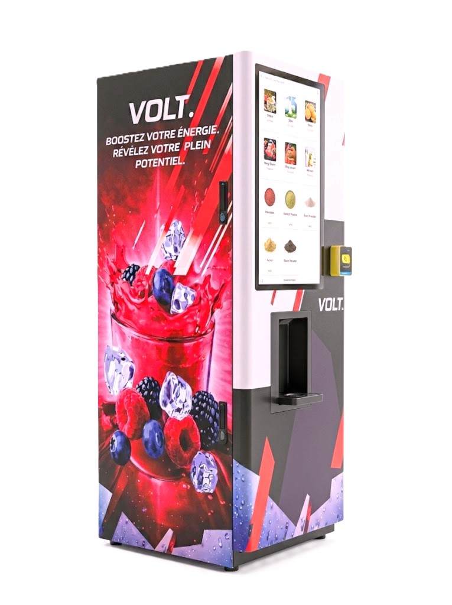

Disponible à Neuchâtel · Canton de Neuchâtel
Distributeur de boissons connecté pour votre salle de fitness à Neuchâtel
Neuchâtel, ville du lac et de l'horlogerie — équipez votre salle de fitness avec une station VOLT. et offrez à vos membres des boissons vitaminées à moins de 5 kcal, sans investissement, sans gestion.
0 CHF
Installation
9 sec
Par boisson
100%
Clé en main
Neuchâtel · Canton de Neuchâtel
Pourquoi les clubs
neuchâtelois choisissent VOLT.
Neuchâtel est une ville dynamique au bord du lac, avec une population active issue de l'industrie horlogère, de la micro-technique et des hautes écoles. Les salles de fitness neuchâteloises cherchent des services innovants pour fidéliser leurs membres et augmenter leurs revenus sans alourdir leur gestion.
- Service disponible dans tout le canton de Neuchâtel
- Installation et maintenance par VOLT. — zéro contrainte
- Service intégré à vos abonnements, sans investissement ni stock
- Idéal pour les profils actifs et exigeants de Neuchâtel

Questions fréquentes — Neuchâtel
Tout ce que vous voulez
savoir sur Neuchâtel
Nos autres villes
Votre fitness neuchâtelois
mérite mieux
Installation gratuite, abonnements valorisés, membres fidèles. Offre personnalisée pour votre club à Neuchâtel ou dans le canton.
Demander un devis →